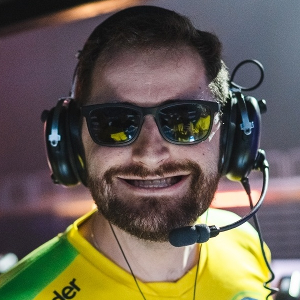
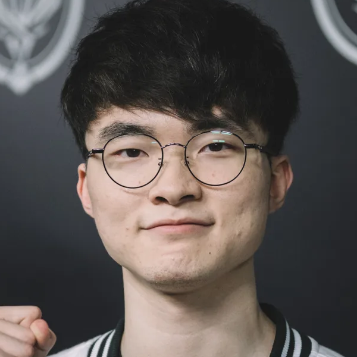
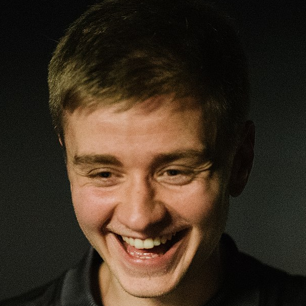
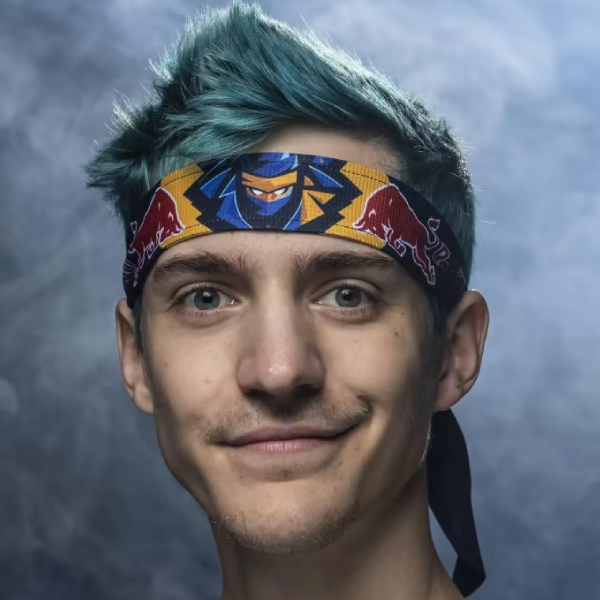

The Players
FalleN
Gabriel Toledo, better known as FalleN (Itararé, May 30, 1991), is a businessman and professional Counter-Strike: Global Offensive (CS:GO) player. He currently plays for Imperial Esports. In 2015 he was named as the most influential person in Brazilian Esports. He is also an investor in the Brazilian organization of Esports Games Academy, Gamers Club and YeaH! Gaming.
It is estimated that the total amount won by FalleN in awards is 1.151 million dollars, with 99% of the awards
Faker
Lee Sang-hyeok, better known as Faker (hangul: 이상혁; born May 7, 1996) (hangul: 페이커; rr: Peikeo) (hangul: 빠커; rr: Ppakeo), is a South Korean professional League of Legends player who plays for the T1 team in the middle position since 2013, and is considered by many to be the best player of all time.
$20 million a year - Its contracts reach more than 1 million
N0tail
Johan Sundstein (born 8 October 1993), better known as N0tail, is a Danish professional Dota 2 player for OG. As a member of OG, he has played in four iterations of The International, winning in 2018 and 2019, and has also won four Major championships. He is widely known as one of the richest Esports players of all time.
In 2020, sources say he earned $75,571.40
Ninja
Richard Tyler Blevins (born June 5, 1991), better known as Ninja, is an American Twitch streamer, YouTuber and professional gamer. Blevins began streaming through participating in several esports teams in competitive play for Halo 3, and gradually picked up fame when he first started playing Fortnite Battle Royale in late 2017. Blevins's rise among mainstream media began in March 2018 when he played Fortnite together with Drake, Travis Scott and JuJu Smith-Schuster on stream, breaking a peak viewer count record on Twitch. Blevins has over 18 million followers on his Twitch channel, making it the most-followed Twitch channel as of September 2022.